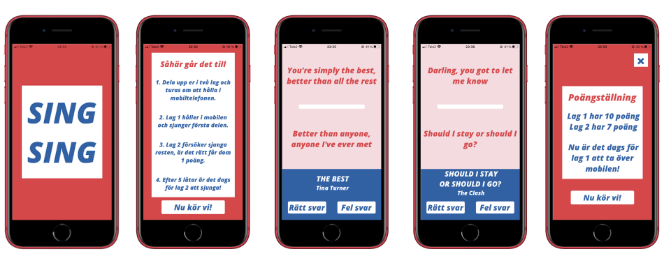
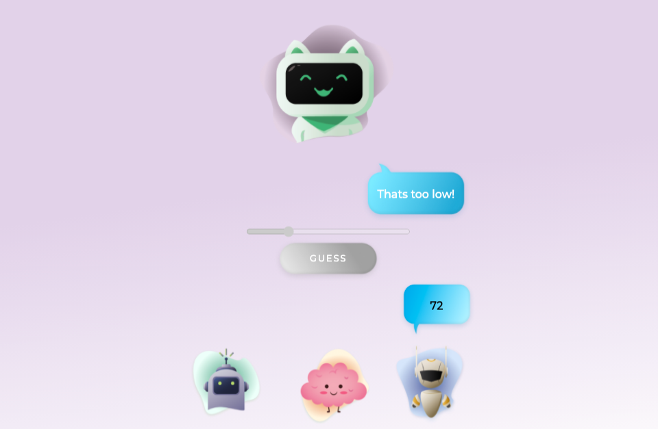
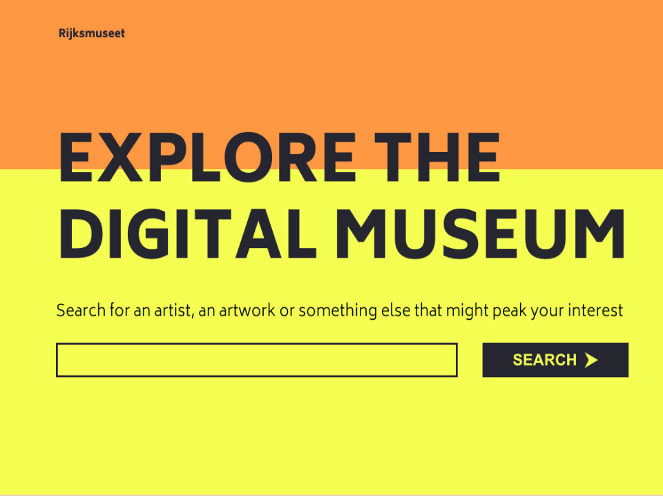
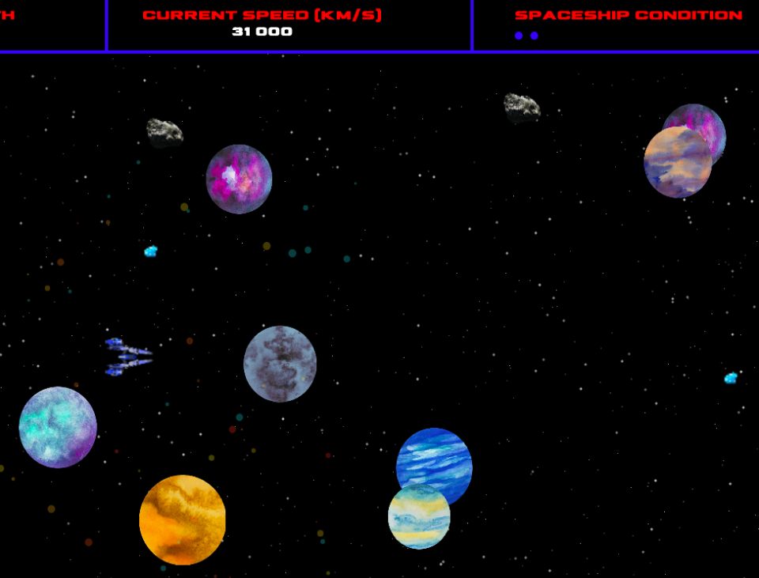

Om mig
Hösten 2020 började jag studera till Front End Developer.
Det jag gillar mest med webbutveckling är att få vara en problemlösare,
utmana sig själv (för oj vad utmanande det är ibland!) och att det
aldrig bara finns en lösning.
Innan jag började plugga till Front End Developer har jag bland annat studerat ett halvår i Frankrike, samt
jobbat 3,5 år med barn och unga i Svenska Kyrkan. Därifrån har jag med mig många erfarenheter som jag är säker att
jag kommer ha nytta av även i mitt yrke som webbutvecklare.
Projekt
Under min tid på Medieinstitutet
har jag fått kunskaper inom...

Sing Sing
Ett projekt skapat i React Native, februari 2021.
Appen är inspirerad av sällskapsspelet Sing Sing skapat av Ninja Print.
Github-repo

Digit Dash
I kursen 'Projektarbete med agila metoder' fick vi uppdraget att utveckla ett 'nummer-gissningsspel'.
Under hela projektet arbetade vi efter agila principer.
Github-repo

Digital Museum
Ett digitalt museum där man kan söka, upptäcka, och lära sig mer om olika konstverk.
Projektet är utvecklat i React och vi använde Rijksmuseum API.
Github-repo

Space Explorer
Ett spel utvecklat i p5.js med objekt-orienterad programmering, januari 2021.
I en grupp på 4 utvecklade vi Space Explorer, där målet är att överleva rymdens alla faror så länge du kan.
Github-repo